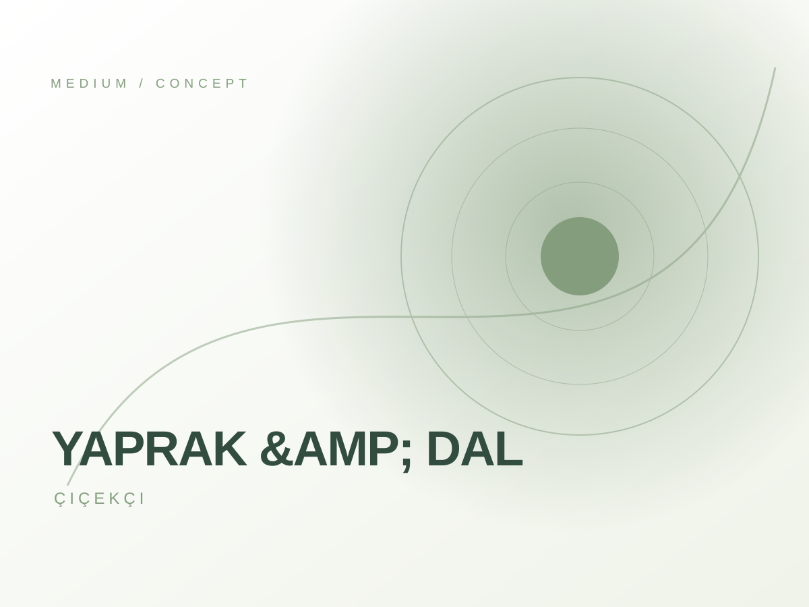

Özen
Küçük ayrıntılar büyük fark yaratır.
En güzel anlara eşlik eden zarif buketler ve doğal renkler.

ÖRNEK GÖRSELYaprak & Dal, çiçekçi deneyimini daha samimi, şeffaf ve anlaşılır kılmak üzere kurgulanmış bir örnek marka projesidir.
Bu demo metinleri gerçek marka geçmişini anlatmaz. Canlı bir işletme sitesi yayına alınırken kimlik, hizmet geçmişi, ekip ve iletişim bilgileri doğrulanmış içeriklerle değiştirilir.
Örnek projeler ↗Küçük ayrıntılar büyük fark yaratır.
Güven açık ve anlaşılır iletişimle başlar.
İyi deneyim karmaşadan uzak bir sunum ister.